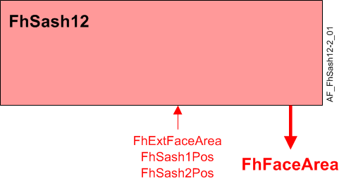
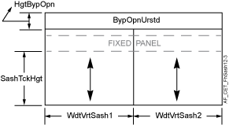

通风柜窗框，双垂直和外部 (FhSash12)
Overview
应用功能》Fume hood sash 12, double vertical and external" (FhSash12）用于计算具有两个并排垂直窗框的通风柜的表面面积。
主要特点：
- Face area calculation
- Face area valid signal
Function

| 命令或请求（或相关） |
| 条件或状态或可用性的通知 |
| 设备模式 |
| 互锁（内部信号，不是 BACnet 对象；有关其他信息，请参阅互锁部分） |


Face area calculation:

面部面积是使用以下公式计算得出的值：
- FhSash1Pos – Sash position from the sash sensor, analog input value.
- FhSash2Pos – Sash position from sash sensor 2, analog input value.
- FhExtFaceArea – External face area, analog input value.
- SashTckHgt – The height of the sash track, analog configuration extension item.
- WdtVrtSash1 – The width of vertical sash 1, analog configuration extension item.
- WdtVrtSash2 – The width of vertical sash 2, analog configuration extension item.
- HgtBypOpn – Height of bypass opening, analog configuration extension item.
- BypOpnUrstd – Unrestricted bypass opening, analog configuration extension item.
- TotAreaFixOpn – Total area of fixed openings, analog configuration extension item.
- ExtFaceArea – External face area is used, binary configuration extension item.
- AreaSenFail – Area on sensor failure, analog configuration extension item.
- FhFaceArea – Fume hood face area, analog calculated value, for monitoring only.
|
|


Note
FhExtFaceArea仅在以下情况下用于 FhFaceArea 计算：ExtFaceArea设置为是。
Face area valid signal: 这FaceAreaVld其他模块使用输出来确定一般通风柜故障警报是否应激活并将其他对象设置为有效。
FaceAreaVld 信号是来自窗扇 1 位置传感器和外表面区域的有效信号的组合。ExtFaceArea用于确定是否存在活动的外部面部区域设备。
输出将仅为 ON 并且FhFaceArea仅在以下情况下才设置有效：
- sash 1 position sensor, sash 2 position sensor and external face area are valid, and external face area is active.
OR
- sash 1 position sensor and sash 2 position sensor are valid, and external face area is not active.
Note
窗扇传感器必须经过校准。看Sash calibration and verification在技术原理中了解更多信息。
Feature configuration
特征选择“Room HVAC coordination" 通过配置组件中的应用程序配置任务进行访问。
Feature (AF) | 功能描述 | 参考号 |
|---|---|---|
Trend for fume hood face area | None/Active | ☑ |
Configuration
 Parameters
Parameters
描述 | 范围 | 默认值 |
|---|---|---|
External face area ▶ 如果窗扇开放区域模块连接在 SCOM 上，则设置为“是”。 0:No | ExtFaceArea | 0:No |
Sash track height | SashTckHgt | 0 [cm] |
Width of vertical sash 1 | WdtVrtSash1 | 0 [cm] |
Width of vertical sash 2 | WdtVrtSash2 | 0 [cm] |
Height of bypass opening | HgtBypOpn | 0 [cm] |
Unrestricted bypass opening | BypOpnUrstd | 100 [%] |
Total area of fixed openings | TotAreaFixOpn | 0 [m2] |
Area on sensor failure | AreaSenFail | 0.5 [m2] |
Length unit | LngtUnit | [cm] |
Area unit | AreaUnit | [m2] |
Interface
界面 | 描述 | 类型 | 参考号 | 拥有者 |
|---|---|---|---|---|
FhExtFaceArea | Fume hood external face area | AI | ◉ | Room segment / Field device |
FhSash1Pos | Fume hood sash 1 position | AI | ◉ | Room segment / Field device |
FhSash2Pos | Fume hood sash 2 position | AI | ◉ | Room segment / Field device |
FhFaceArea | Fume hood face area | ACalcVal | ● | - |
TrndFhFaceArea | Trend for fume hood face area | FtrSel | ● | - |
Engineering and commissioning
选修的。